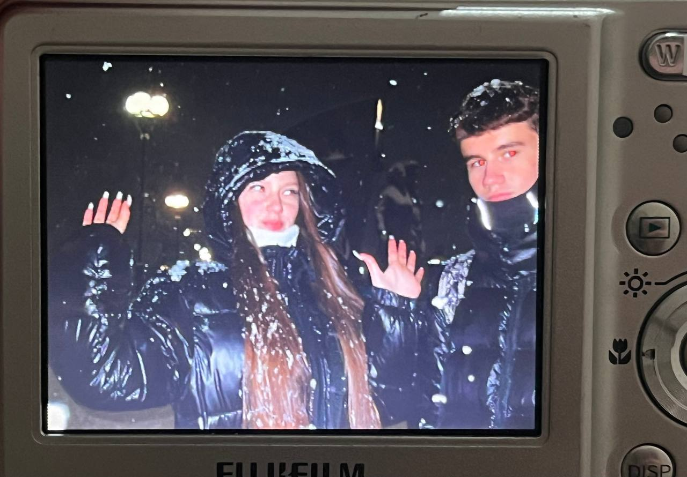
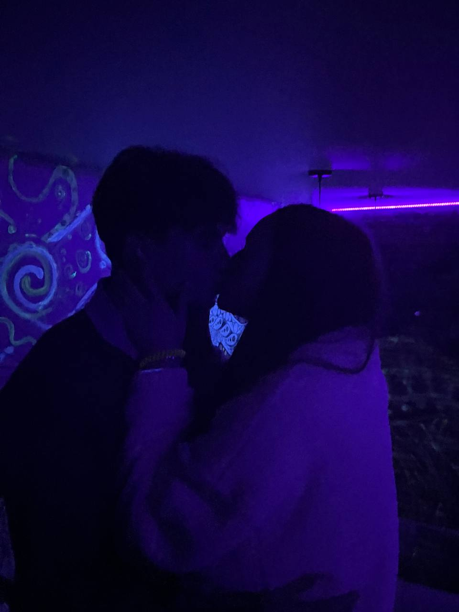
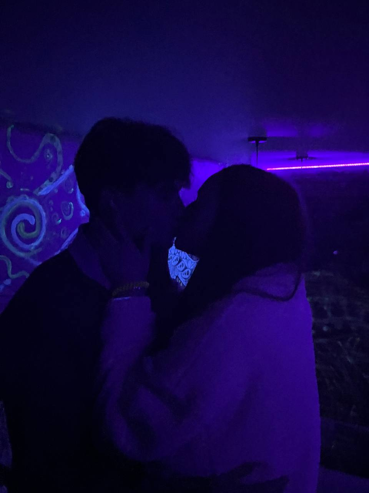
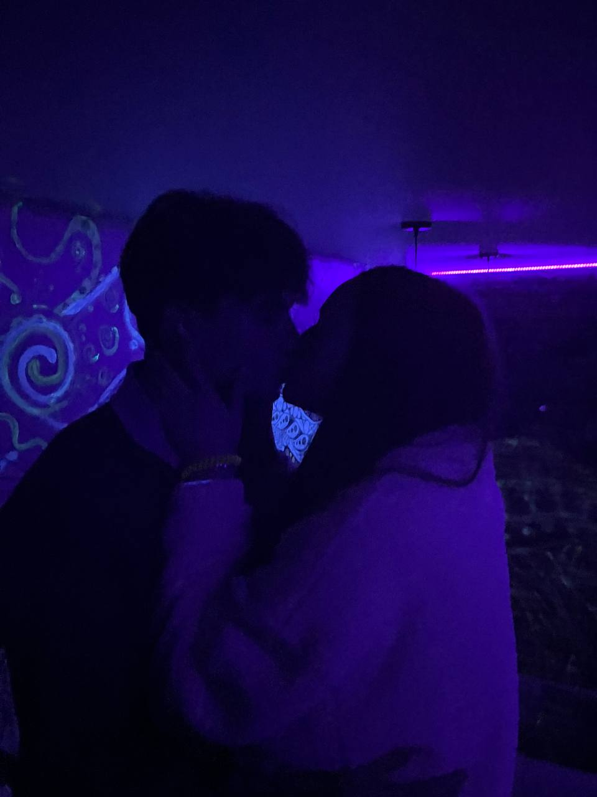
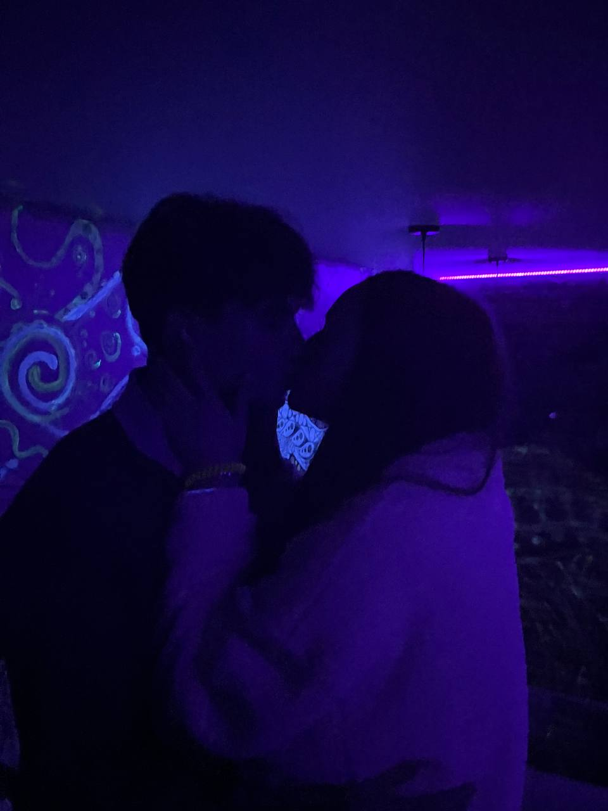
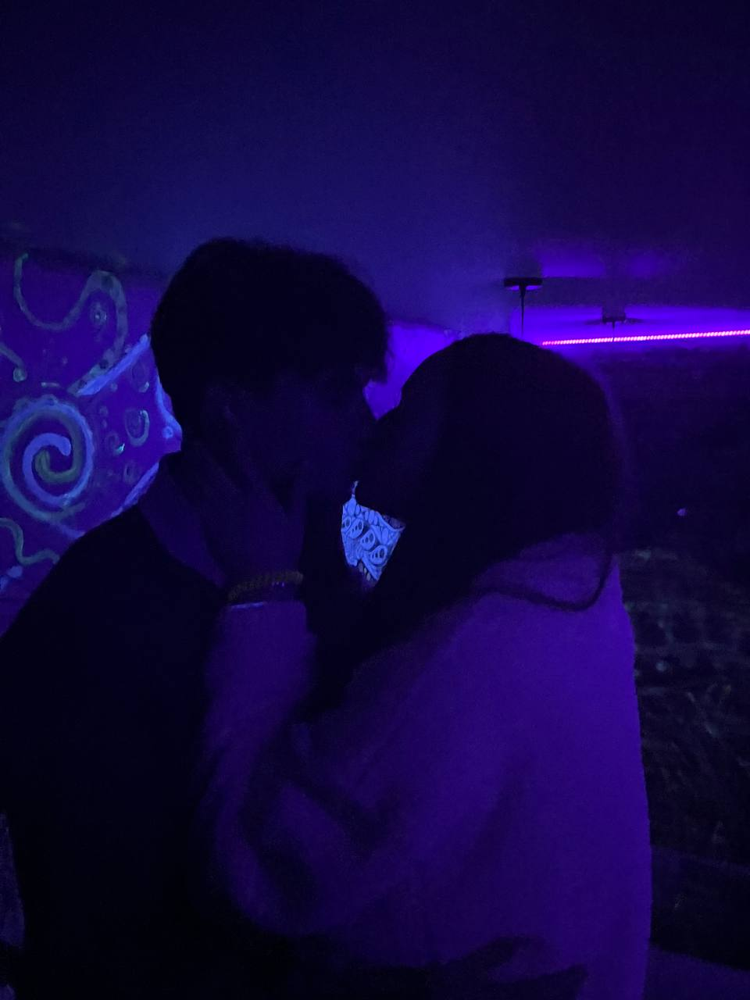

С 14 февраля, любимая!
Ты – самое дорогое, что у меня есть.
Ты – моя радость, моя любовь.
С тобой я счастлив.
Ты – моя муза и вдохновение.
Ты делаешь каждый день особенным.
Спасибо, что ты есть!


Ваш браузер не поддерживает аудио.
▶ Включить музыку
 


